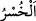
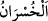
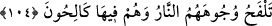
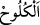

onların Allah katında bir ağırlığı ve kıymeti yoktur. Bunlar kâfirlerdir. Çünkü Allah
Teâlâ: “Biz onlar için kıyamet gününde hiçbir ölçü tutmayacağız.” (el-Kehf,
18/105) buyurmuştur.
“artık bunlar da kendilerine yazık etmişlerdir” nefislerini kemâle erdirme zamanını
boşa geçirerek kendilerini zayi etmişler, nefislerinin kemaline nâil olmak için gereken
istîdadlarını boşa çıkarmışlardır.
el-Müfredat’ta belirtildiğine göre “
”ve “
”, sermayenin eksilmesi demektir.
Kâşifî der ki: “Nefislerinden dolayı zarara uğrayan, yâni ömür sermayesini rüzgâra
veren, boşa harcayan topluluk, kemal elde etmeleri için kendilerine verilen istîdâdı
nefsin istek ve arzularını yerine getirmek ve şehevî emellerine uymak uğruna zâyi
ettiler.”
“(çünkü onlar) ebedî cehennemdedirler.”
et-Te’vîlâtü’n-Necmiyye’de der ki: “İnsan, tavuğun velayet tasarrufunu kabule ve
kendisinden civciv çıkmasına istidadlı olan bir yumurtaya benzer. Tavuğun tasarrufta
bulunmadığı yumurtanın istîdadı bâkîdir. Tavuk o yumurtada tasarrufta bulununca
bulunduğu halden, civciv haline döner. Sonra tavuğun yumurta üzerindeki tasarrufu
kesilince, yumurta bozulur. Yumurtanın istîdadı bozulduğu için bundan sonra tasarruf
ona fayda vermez. Bu yüzden “Tarîkat mürteddi şeriat mürteddinden daha kötüdür.”
demişlerdir. İşte “ebedî cehennemdedirler.” sözünün mânâsı budur. Yâni onlar
nefislerinin cehennemindedirler. Civciv olarak çıkamazlar. İstidad bozulduktan sonra
onu ıslah edip düzeltmek sünnetullahtan değildir.
Câmî der ki:
Yerin Karun gibi içine çektiği kimseyi
Ne Mûsâ çıkarır yeryüzüne ne de Hârûn
Tepetakla olan felek yüzünden bozulmuş olanı
Ne attarlar iyileştirir ne de doktorlar
104. Ateş yüzlerini yakar; orada suratları çirkin ve gülünç bir halde bulunurlar.
“Ateş yüzlerini yakar” Yüz, uzuvların en şereflisi ve ateşten en çok korunanı olduğu
için ateşin yakması ona tahsis edilmiştir. Yüzün durumunun açıklanması, insanı ateşe
götüren masiyetlerden onu daha fazla engeller.
“orada” yanmanın şiddeti sebebiyle “suratları çirkin ve gülünç bir halde
bulunurlar.” Yüzler kavrulur dişler de iyice açığa çıkar ve sırıtır kalır.
“
” pişmiş kellelerde görüldüğü gibi dudakların dişlerin üzerinden çekilip
toplanmasıdır.